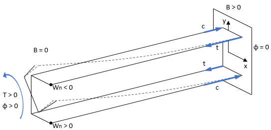
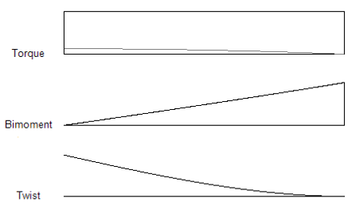

When you display analysis diagrams for reactions, shears, moments, and deflections, you may choose the option to display torsion diagrams. A similar set of diagrams is displayed for reactions, torques, bimoments, and twist. The reactions are the torques applied to the member at twisting restraints (T supports). You can move the mouse pointer along the length of a diagram to display the magnitude at any location.
The Torque diagram shows the stress resultant (T) from internal torsional shear stresses (CCW positive). The gradient (slope) of the torque diagram corresponds to the distributed torsional load applied to the member. The torque value at any location is the sum of the torques for warping torsion and pure (St. Venant) torsion. The torque for pure torsion alone (Tsv) is plotted in gray. The torque for warping torsion (Tw) is the difference between the curves.
T = Tw + Tsv = ECwϕ''' – GJϕ'
The Bimoment diagram shows the stress resultant (B) from internal longitudinal stresses. For a C section with a vertical web, a positive bimoment causes tension in the upper-right and lower-left quadrants of the section (where Wn<0), and causes compression in the upper-left and lower-right quadrants of the section (where Wn>0).
B = ECwϕ''
Warping continuity (bimoment and warping displacement) is maintained where the same cross-section is continuous. If the analysis members abruptly switch from one section to another, warping continuity is not maintained.
The twist diagram shows the angle of twist of the members (CCW positive). The following illustrations show the sign conventions used by CFS.


The Print button will print the currently displayed diagrams. This printout is formatted for standard 8½x11 inch paper in portrait orientation.Other sizes and orientations should work, but may result in less effective use of the paper or illegible diagrams.
The Copy Image button will copy the diagrams display image to the clipboard, which may then be pasted into another application.
The Report button will produce a text version of the peak values on the diagrams. See Torsion Diagrams Report.
See also Torsion Analysis and Torsion Design.